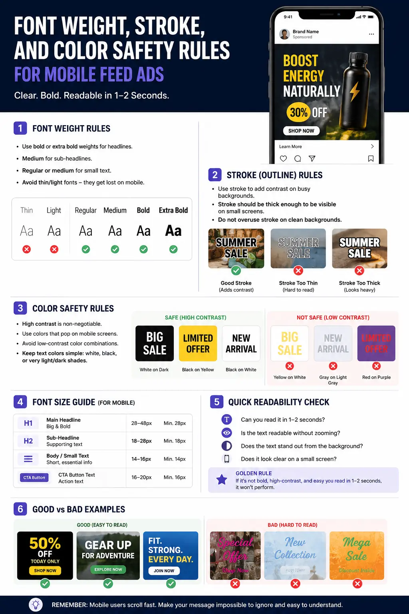
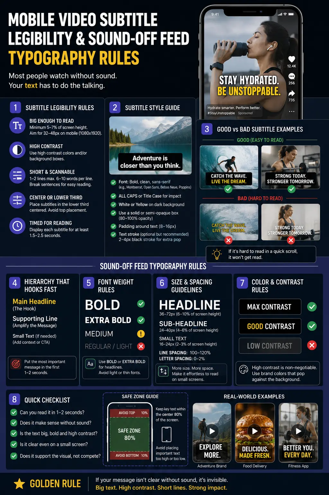
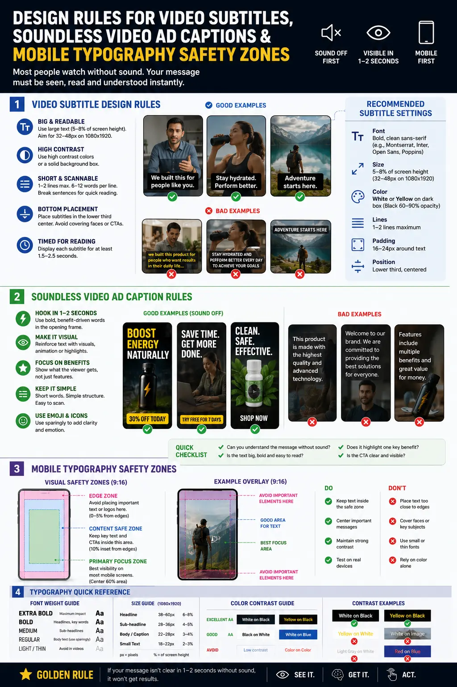

Font Weight, Stroke, and Color Safety Rules for Mobile Feed Ads
The Muted Feed Revolution: Why Typography Commands Mobile Video Conversions
In the high-speed ecosystem of mobile social media—spanning Instagram Reels, TikTok, YouTube Shorts, and Meta Feed Ads—more than 75% of users scroll through video content with their smartphone audio completely turned off. Whether commuting on public transit, sitting in quiet office spaces, or late-night scrolling, modern consumers experience visual advertising silently. In this environment, audio voiceovers and background music can no longer carry the weight of your value proposition. Typography is no longer an optional caption layer; it is your primary sales presenter, brand voice, and visual hook.
When a video ad lacks strict Sound-Off Feed Typography Rules, its message is instantly lost. Unfocused font choices, paper-thin letterforms, poor background contrast, and text clipped behind platform interface overlays lead directly to user drop-off within the first 1.5 seconds. To build high-converting mobile video creative, performance advertisers and motion designers must engineer captions using strict typographic math, color safety matrices, and mobile typography safety zones.
Mastering Mobile Video Subtitle Legibility requires combining technical design standards with dynamic Creative Advertising Text Motion. When on-screen text coordinates seamlessly with visual cuts and action hooks, viewers digest key product benefits effortlessly without ever needing to tap the unmute button. This comprehensive manual details the font weight specifications, stroke boundaries, color contrast standards, and layout safety rules required to deploy high-performing soundless video ad captions that capture attention and drive measurable performance.
The Mechanics of Mobile Video Subtitle Legibility: Weight, Scale, and Geometry
Mobile screens present unique optical challenges. Smartphone displays range from 5.4 inches to 6.7 inches, yet viewers hold devices anywhere from 8 to 14 inches from their eyes while moving, walking, or scrolling at rapid speeds. Furthermore, video backgrounds under soundless video ad captions are dynamic: lighting changes from light to dark within split seconds, camera movement introduces visual noise, and busy textures compete for visual focus.
- Font Weight and Geometry: Never use Thin, Light, Regular, or decorative serif typefaces for on-screen subtitles. Light stroke widths collapse under video compression algorithms (H.264 / H.265) and become unreadable on high-density mobile screens. Always select heavy sans-serif fonts with clean geometric apertures—such as Montserrat ExtraBold, Inter Black, Proxima Nova Bold, or Futura Heavy. Heavy weights provide thick stroke density that preserves structural legibility even over chaotic motion backgrounds.
- Establishing the Best Font Size: Determining the Best font size for Instagram Reels captions requires designing relative to standard canvas dimensions. For full-screen vertical 9:16 video (1080x1920 resolution), main hook captions must range between 42pt and 56pt (roughly 3.5% to 5% of total canvas height). Secondary explanatory subtitles should never drop below 32pt. Anything smaller forces viewers to strain their eyes, breaking feed momentum and increasing scroll-away rates.
- Kerning, Leading, and Line Caps: Keep tracking tight (between -10 to -30 units) to compress word blocks into compact visual units that the eye can scan in a single fixation point. Set leading (line height) to 105%–115% of the font size. Limit text blocks to a maximum of 2 to 4 words per line, breaking lines at natural syntactic pauses so captions match the natural cadence of speech.
- Text Isolation Mechanisms: Creating readable text overlays on video requires separating text from the background image. Relying purely on font color is insufficient when video lighting shifts dynamically. Implementing an isolated background pill, a high-density outer stroke, or a localized drop shadow guarantees 100% legibility across every frame.
Muted Feed Conversions
Adhering to sound-off typography rules captures muted impressions instantly, ensuring viewers absorb key product offers without turning on sound.
3-Second Hook Retention
High-contrast, bold text overlays paired with creative advertising text motion hold viewer attention during the critical opening seconds of the feed.
Universal Screen Readability
Optimized font weights and stroke boundaries guarantee crystal-clear legibility across OLED displays, low brightness modes, and small phone screens.
Zero UI Text Clipping
Enforcing strict mobile typography safety zones prevents captions from getting obscured by platform user interfaces, like buttons, and caption boxes.

Stroke, Shadow, and Pill Isolations: The Contrast Triad
Achieving maximum Mobile Video Subtitle Legibility across variable background footage requires applying proven optical isolation techniques. When video footage switches between bright sunlight, dark shadows, and cluttered background textures, unisolated text disappears. Incorporating the Contrast Triad guarantees that every word remains crisp and legible regardless of background conditions.
- Outer Stroke Boundaries (Text Outlines): Adding an outer stroke is one of the most effective design rules for video subtitles. For 1080x1920 canvas resolutions, apply an outer stroke width of 3px to 6px. White text paired with a pure black stroke (#000000) or ultra-dark complementary stroke creates an impenetrable contrast barrier. Crucially, ensure stroke alignment is set to "Outer" in editing software (Adobe Premiere Pro, After Effects, or CapCut) so the stroke expands outward without eating into the font's inner character counter.
- Drop Shadow Matrices: Drop shadows create spatial depth, lifting typography off the flat video plane. The optimal drop shadow setting for high-speed mobile feeds utilizes a direction angle of 90° or 135°, a distance of 4px to 8px, a blur softness of 8px to 14px, and an opacity level of 65% to 85%. This produces a subtle dark halo behind letterforms that softens background clutter without creating distracting dirty edges.
- Background Pill Boxes: Background pills (solid or semi-transparent rectangular rounded boxes behind text words) provide absolute legibility. Using a semi-transparent black pill (#000000 with 75% opacity) or a high-contrast brand accent color (such as electric yellow #FFD700 with black text) isolates words entirely from video motion. Dynamic background pills that highlight word-by-word as the speaker talks increase caption scanning speed by over 40%.
- Color Safety Matrices: Adhere to WCAG AAA contrast standards by maintaining a minimum contrast ratio of 7:1 between text and its immediate background. High-performing color combinations include pure white text (#FFFFFF) on dark backgrounds, neon yellow text (#FFEE00) with black strokes, and high-visibility cyan (#00E5FF) for key emphasis words. Avoid low-contrast pastels, muted grays, or red text overlays, which bleed into compressed video streams.
Platform Safety Zones & Layout Rules for Soundless Video Ad Captions
A common failure in short-form ad creative is placing beautiful captions in areas obscured by platform user interface (UI) elements. Social media apps overlay native UI buttons, account handles, caption descriptions, sound icons, and bottom progress bars directly over video content. Adhering to mobile typography safety zones ensures captions remain fully visible across all mobile devices and app formats.
9:16 Vertical Safety Framework
- Top Safety Margin: Maintain a 15% top padding (approx. 288px on 1920h canvas) to clear header bars, search icons, and camera cutouts.
- Bottom Safety Margin: Maintain a 20% bottom padding (approx. 384px on 1920h canvas) to clear caption text, audio tickers, and CTA bars.
- Lateral Safety Margin: Maintain an 8% side margin (approx. 86px on 1080w canvas) to clear right-side like, comment, and share icons.
- Primary Caption Box: Restrict all core text overlays to the central 65% vertical screen space.
4:5 & 1:1 Feed Ad Typography Rules
- In-Feed Padding: Keep text at least 60px inside lateral edges to avoid cropping on varied screen aspect ratios.
- CTA Button Clearance: Reserve the lower 15% of the frame for native "Shop Now" or "Learn More" sponsored ad banners.
- Multi-Line Stack Control: Limit feed ad text stacks to maximum 2 lines to prevent covering central product imagery.
- High-Density Saliency: Position primary value hooks in the upper-middle quadrant for immediate visual absorption.
Creative Advertising Text Motion
- Pop-In Animation: Scale key words from 90% to 105% in 3 frames for subtle kinetic emphasis without visual jitter.
- Word Highlight Sweeps: Change text color word-by-word synchronously with audio pacing for maximum viewer tracking.
- Minimalist Kinetic Cuts: Hard cut captions in sync with video edits—avoid slow 1-second fades that delay readability.
- Rhythmic Line Bounces: Apply subtle vertical 5px slide transitions to signal new thought points without distracting from footage.

Integrating Creative Advertising Text Motion for High Retention
Static captions feel passive in high-tempo social feeds. To keep viewers engaged past the 3-second mark, top-performing video ads leverage Creative Advertising Text Motion. Kinetic typography transforms plain text into an active visual element that guides the viewer's focal path across the frame.
However, dynamic motion must follow strict design rules for video subtitles to prevent cognitive fatigue. Overly chaotic text animations—such as spin-ins, extreme camera flips, or frantic letter bouncing—distract from the product presentation and reduce comprehension. The objective of kinetic text motion is to lower visual friction and reinforce verbal pacing.
- Synchronous Word Popping: Animating text word-by-word or in short 2-word phrases as they are spoken creates a rhythmic visual beat. Using pop-in scale transitions (snap scaling from 95% to 100% over 2 frames) signals new information instantly.
- Color Accent Sweeps: Maintain a base white text color for all standard words, while instantaneously sweeping key trigger words (such as "FREE", "50% OFF", "SECRET", "RESULTS") to high-visibility yellow or brand accent colors. This selective contrast draws the viewer's eye to high-value concepts even if they only skim the screen.
- Anchor Point Positioning: Keep text anchor points locked to a consistent screen vertical coordinate (typically lower-middle center). Shifting caption locations around different screen corners forces the viewer's eyes to jump frantically, leading to visual exhaustion and early scroll-aways.
- Speed Pacing Alignment: Match text animation duration directly to video pacing. In fast-cut UGC ads (cuts every 0.8 to 1.5 seconds), text overlays must appear instantly without transition delays. In smooth product demo videos, subtle 4-frame slide-ups provide elegant continuity.
Step-by-Step Implementation Guide for Video Editors and Performance Teams
To reliably enforce Sound-Off Feed Typography Rules across your creative production pipeline, establish a standardized editing protocol. Performance marketing agencies and in-house video teams in Madurai and worldwide can implement these actionable workflow steps:
- Import Safety Zone Overlays: Save PNG overlay templates depicting Instagram Reels, TikTok, and YouTube Shorts UI native elements into your editing software (Premiere Pro, After Effects, or DaVinci Resolve). Toggle these guide overlays on during the text placement phase to guarantee zero overlap with platform icons.
- Establish Motion Typography Presets: Build master Essential Graphics templates (MOGRTs) featuring pre-configured font weights (Montserrat ExtraBold), standard font sizes (48pt for 9:16 canvas), 4px black outer strokes, and 75% opacity background pills.
- Execute Transcriptions & Line Splitting: Generate automated transcriptions, then manually clean text blocks into bite-sized 2-to-3 word lines. Eliminate filler words and break lines at natural syntactic clauses to maximize scanning speed for soundless video ad captions.
- Apply Contrast Isolation Checks: Scrub through the entire video timeline. At every scene change or background lighting shift, verify that text contrast remains crisp. If a background scene turns bright white, ensure the black outer stroke or pill layer prevents letter clipping.
- Quality Test on Actual Mobile Hardware: Export draft edits and preview them directly on mobile screens at 50% device brightness with sound muted. If any word requires second-glance effort to read, adjust font weight, stroke thickness, or pill opacity immediately.
Conclusion
In modern performance advertising, Mobile Video Subtitle Legibility is not merely a cosmetic choice—it is a core revenue driver. Implementing strict Sound-Off Feed Typography Rules, calculating the Best font size for Instagram Reels captions, applying readable text overlays on video through stroke and background pills, and enforcing mobile typography safety zones ensures your message resonates with silent scrollers across every platform.
By pairing clean typography mathematics with Creative Advertising Text Motion and disciplined design rules for video subtitles, performance marketers transform muted feed impressions into high-converting video ad campaigns. Whether crafting direct-response ecommerce ads or brand promo videos, crystal-clear soundless video ad captions guarantee that your value proposition commands attention on every mobile screen.
At The PhD Ads in Madurai, we specialize in high-converting video ad creative, Creative Advertising Text Motion, Mobile Video Subtitle Legibility, and sound-off typography engineering designed to stop the scroll and maximize ad ROI.
Key Topics
Ready to Optimize Mobile Subtitle Legibility and Drive Muted Ad Conversions?
At The PhD Ads in Madurai, we design high-converting video ads, creative advertising text motion, and sound-off feed typography rules built to capture muted scrollers and scale performance campaigns.
Email: team@e2o.in